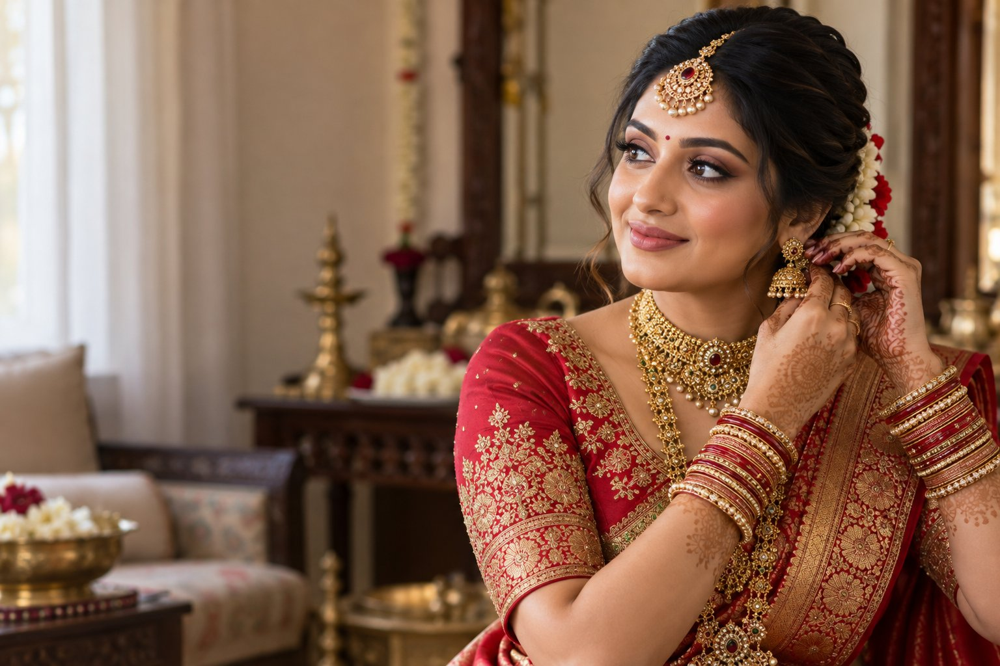
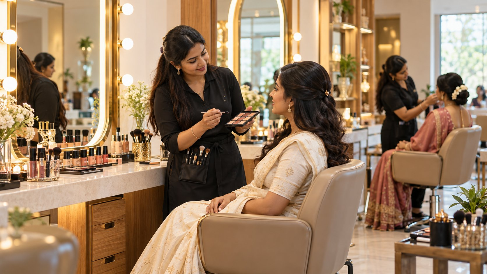

Bridal makeup · Occasion beauty · Hairstyling
Beauty that feels like you, on your most memorable day.
Thoughtful makeup artistry and hairstyling for brides, celebrations, and the moments worth remembering.
Personalized looks for weddings and special occasions

A considered approach
Your look, thoughtfully brought together.
From the first conversation to the finishing touches, each look is shaped around your preferences, occasion, and personal style.
Meet Sanika MakeoverExplore
View all servicesBeauty for every celebration
Makeup and styling for the moments that matter.
The portfolio
Looks made for the occasion.
Explore bridal makeup, event looks, and hairstyling.
View gallery